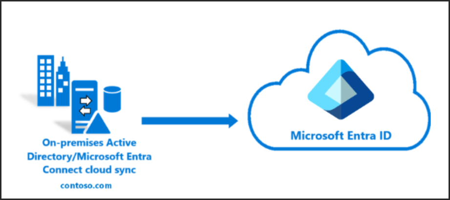

Microsoft Entra Connect Setup
Microsoft Entra Connect Setup

Checklist - make sure you’ve got:
•Windows Server 2025 VM joined to your on-prem AD domain
•On-prem Active Directory already configured (AD DS role installed)
•Azure AD tenant ready (with Global Admin access)
•Internet access from the VM
•Optional but recommended: a dedicated service account for Azure AD Connect
Step-by-Step:
Download Entra Connect – Cloud Sync
Get the latest version from your Entra Portal:
entra.microsoft.com
In the portal, navigate to:
Entra Connect → Get Started → Manage → Download Connect Sync Agent


Make a service account – password don’t expire
Add the new account in the “Log on as a service” in secpol.msc
✅Recommended Selection
•Password Hash Synchronization
This is the simplest and most reliable method for hybrid identity in a lab or small enterprise setup. It syncs password hashes from your on-prem AD to Azure AD, allowing users to sign in with the same credentials.
•Optional: Enable Single Sign-On (SSO)
You can check this box if you want seamless sign-in for domain-joined devices. It requires a small change to your on-prem AD (adds a computer account and configures Kerberos SSO). Since you're testing Conditional Access and Autopilot, enabling SSO will give you a smoother experience.
When to Use Other Options
•Pass-through authentication:
Only if you need real-time password validation against your on-prem AD. More complex and less resilient than hash sync.
•Federation with AD FS / PingFederate:
Enterprise-grade setups with external identity providers.
•Do not configure:
Only if you're planning to set up sign-in manually later.
I created a OU to only sync what I want
Let’s Enable Active Directory Recycle Bin
-Adds protection against accidental deletions
-Can be done via PowerShell:
Enable-ADOptionalFeature -Identity 'Recycle Bin Feature' -Scope ForestOrConfigurationSet -Target 'malcolmsoto.com'
Setup a Group Policy to Enable Seamless SSO
Open gpmc.ms
Create a policy and link it to the OU
Go to https://admin.microsoft.com/Health
Directory sync status>Here you can check the status